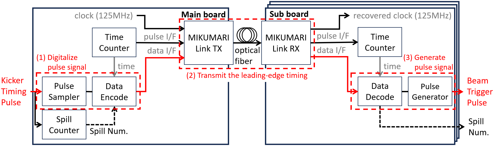
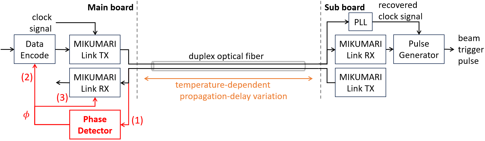
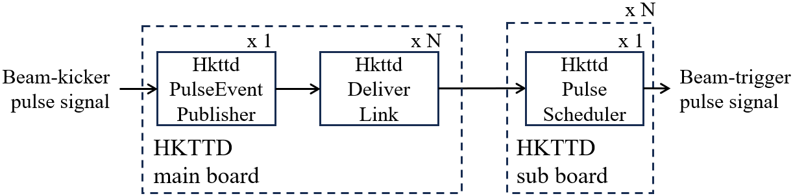
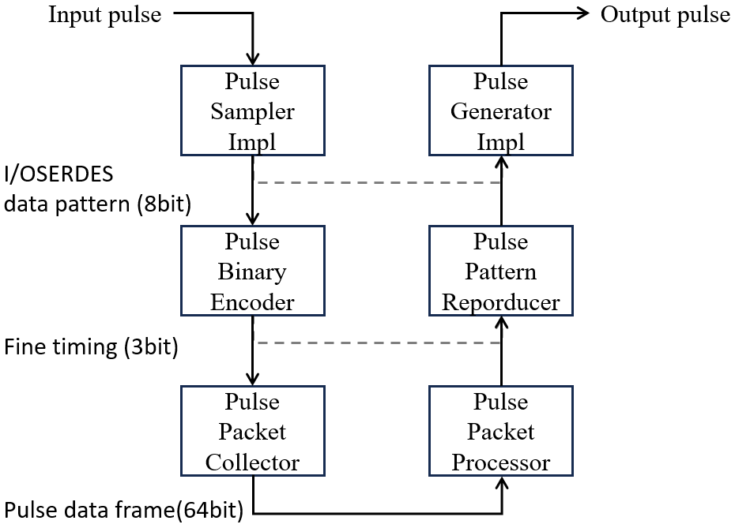
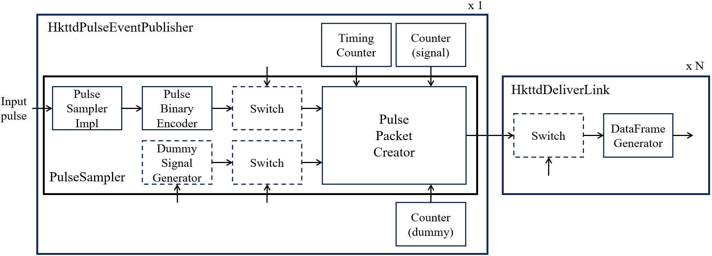
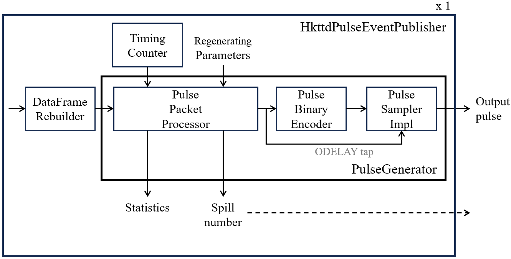
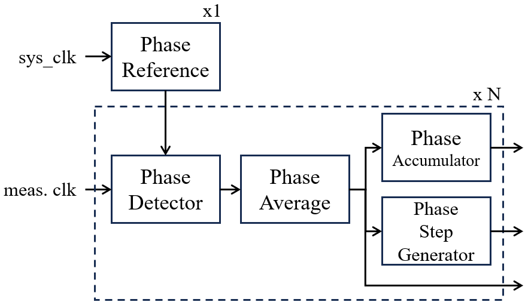
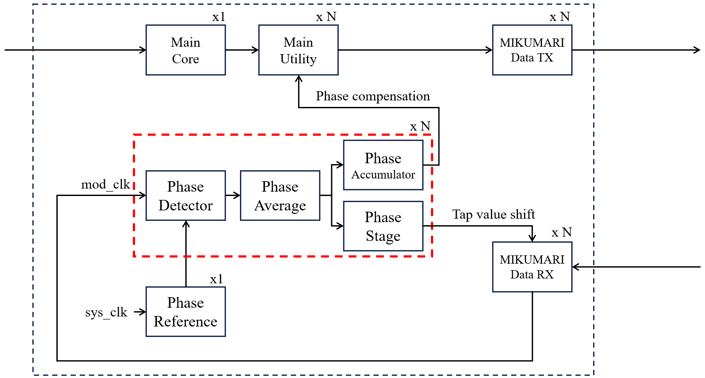
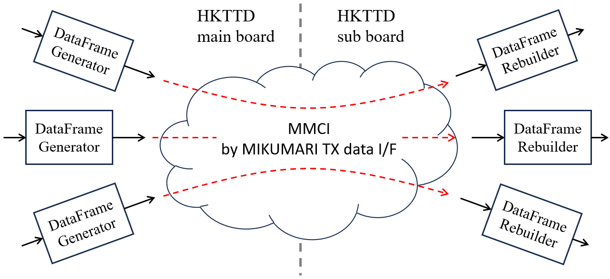
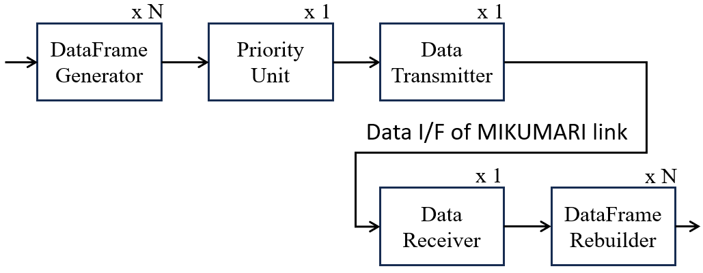

Firmware overview
The Hyper-K Trigger Timing Distributor (HKTTD) uses separate field-programmable gate array (FPGA) firmware projects for the Main and Sub modules.
The two projects share common Very High Speed Integrated Circuit Hardware Description Language (VHDL) components through the hkttd-hdl repository.
Principle
Pulse signal transmission
The Main module receives an external trigger pulse signal. The Main firmware samples the leading-edge timing of the input pulse and converts it into digital timing information.
The timing information is transmitted to each Sub module through a MIKUMARI link. MIKUMARI provides clock synchronization and data transport between the Main and Sub modules.
The Sub firmware receives the timing information and schedules the regeneration of the trigger pulse. The trigger pulse is then generated at the corresponding time.

Principle of trigger pulse timing distribution.
Phase compensation
Temperature changes can cause the propagation delay of an optical MIKUMARI link to vary. The Main firmware measures the phase drift of the returned MIKUMARI modulated clock signal for each link and generates the corresponding compensation information. The compensation information is transmitted to the corresponding Sub module. The Sub firmware uses this information to compensate the timing of the regenerated pulse.

Principle of phase compensation for a MIKUMARI link.
Firmware architecture
Firmware repositories
The HKTTD firmware is maintained in three repositories.
| Repository | Description |
|---|---|
HkttdMain |
FPGA firmware project for the Main module |
HkttdSub |
FPGA firmware project for the Sub module |
hkttd-hdl |
Shared VHDL components used by HkttdMain and HkttdSub |
The hkttd-hdl repository is included as a Git submodule in both firmware projects.
Its HKTTD-specific components are organized into the hkttdCore, pulse, phase, and mmci directories.
hkttdCore
The hkttdCore components connect pulse processing, MIKUMARI data transport, phase information, and local-bus control.
The trigger pulse passes through three principal components:
| Component | Firmware | Description |
|---|---|---|
HkttdPulseEventPublisher |
HkttdMain |
Samples the input trigger pulse and creates pulse timing data |
HkttdDeliverLink |
HkttdMain |
Sends pulse timing and phase information through one MIKUMARI link |
HkttdPulseScheduler |
HkttdSub |
Receives pulse timing data and schedules pulse regeneration |
One HkttdPulseEventPublisher is used in the Main firmware.
One HkttdDeliverLink is used for each Sub-module connection.
One HkttdPulseScheduler is used in each Sub firmware.

Principal hkttdCore components in the Main and Sub firmware.
pulse
The pulse components sample, encode, decode, and regenerate trigger pulse signals.
The Main and Sub firmware integrate these functions through the hkttdCore components.
Within hkttdCore, the PulseSampler and PulseGenerator wrappers combine the lower-level pulse-processing components required for each module.

Overview of the pulse-processing components.
PulseSampler
On the Main module, PulseSampler samples the input pulse and creates pulse timing data.
The timing data includes the information required to reproduce the pulse on a Sub module.

Pulse sampling and pulse timing data generation in the Main firmware.
The PulseSampler also supports internally generated dummy pulses.
Dummy pulses can be used to test the pulse-transmission path without an external trigger pulse.
PulseGenerator
On the Sub module, PulseGenerator decodes the received timing data and regenerates the output pulse.
The pulse-generation delay and width can be configured through the local bus.

Pulse timing data processing and pulse regeneration in the Sub firmware.
phase
The phase components measure the phase drift of the returned MIKUMARI modulated clock signal on the Main module using the digital dual-mixer time difference (DDMTD) method.
PhaseReference provides the reference used for phase measurement.
PhaseDetector measures the phase of the returned MIKUMARI modulated clock signal.
PhaseAverage averages the measured values.
PhaseAccumulator tracks the accumulated phase shift.
PhaseStepGenerator converts the measured phase change into delay-adjustment steps.

Overview of the phase-measurement components.
The Main firmware deploys the phase-processing components for each active MIKUMARI link. The resulting information is used for the phase-compensated output of the corresponding Sub module.

Phase measurement and compensation in the Main firmware.
mmci
The MIKUMARI data-interface multi-channel interface (MMCI) allows multiple data channels to share the MIKUMARI data interface. Each data channel is identified by an address and is transmitted according to its assigned priority.

Multiple data channels transported through the MIKUMARI data interface.
DataFrameGenerator creates a data frame on the transmitting side.
DataFrameRebuilder reconstructs the corresponding data on the receiving side.
DataTransmitter, DataReceiver, and PriorityUnit manage transmission over the shared MIKUMARI data interface.

Overview of the MMCI transmitting and receiving components.